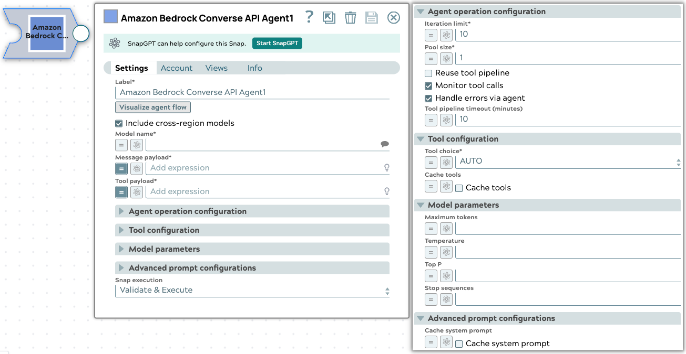
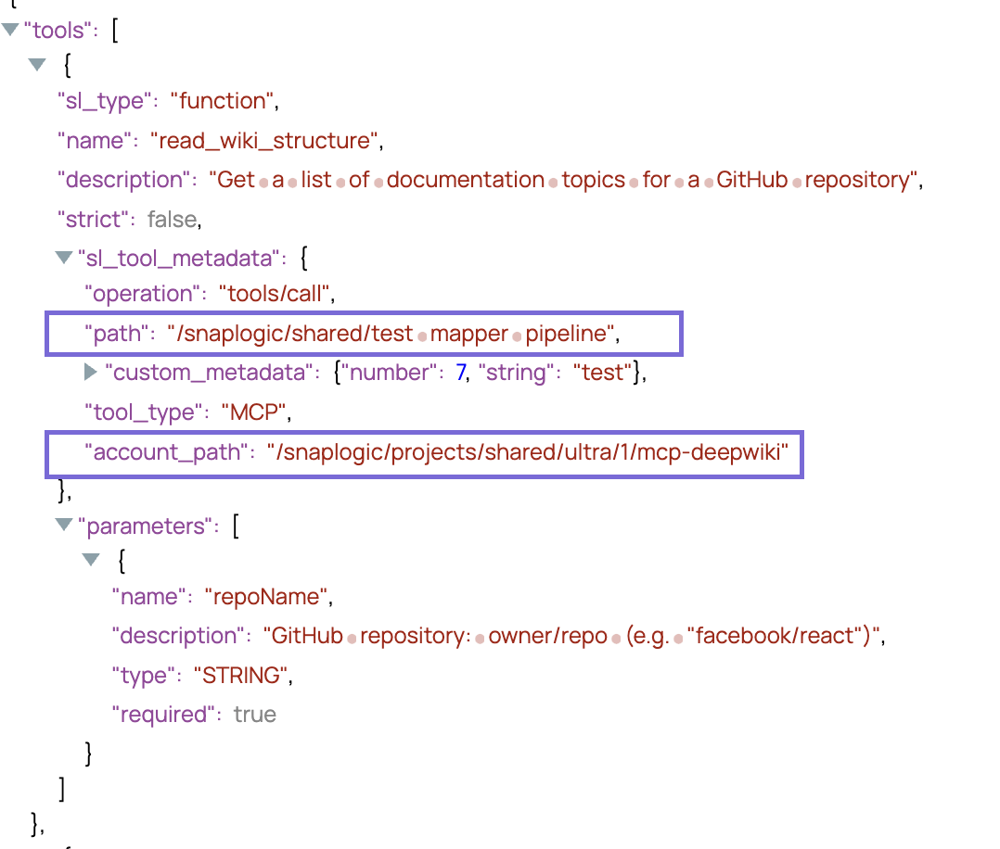
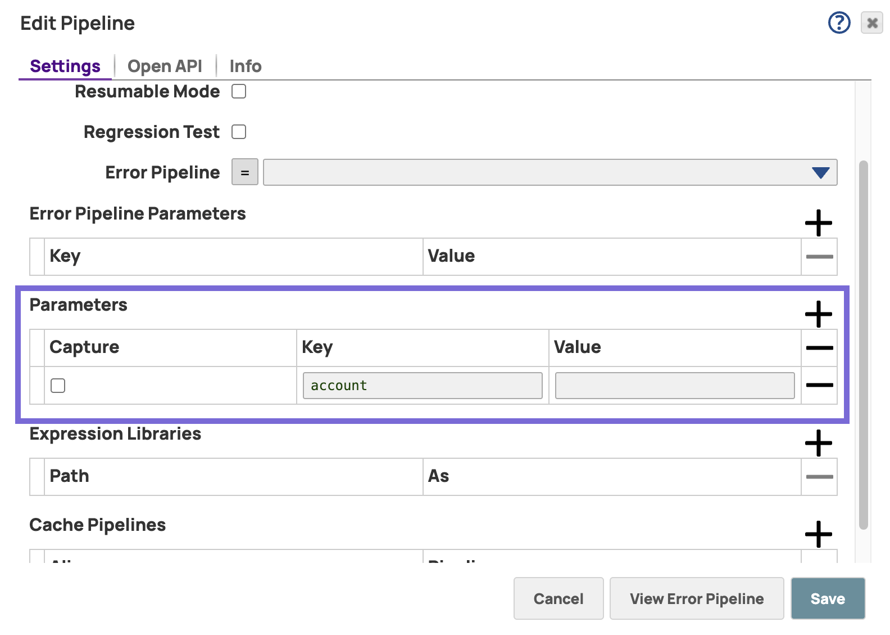

Amazon Bedrock Converse API Agent
The Amazon Bedrock Converse API Agent Snap accepts input containing an initial request contents, a list of tools, and parameters to invoke an Agent execution loop. The Snap handles the call to the Amazon Bedrock Converse API, consumes the result and call tools, then collect them accordingly until the model has no more tools to call.
Learn more about the Agent Snap in this developer blog.

- This is a Transform-type Snap. Learn more about Snap Types.
Limitations
- When you select JSON mode with Claude
models, they may produce malformed JSON, causing parsing errors.
Workaround: Ensure your prompt clearly asks for a valid JSON response, such as: Respond with a valid JSON object.
- Selecting the Thinking checkbox entails the following limitations on the Model parameters fieldset:
- Thinking is not compatible with modifications to Temperature, Top K, or Top P fields.
- Thinking does not support forcing tool use.
- You cannot pre-fill responses with Thinking enabled.
- Changes to the thinking budget invalidate cached prompt prefixes that include messages. However, cached system prompts and tool definitions will continue to work when thinking parameters change.
- Tool pipelines must return a single output document per invocation. If a tool pipeline returns more than one output document, the Agent Snap uses only the first document; the remaining documents are discarded, which may result in data loss. Refer to Create Tools for your Agents.
Snap views
| Type | Description | Examples of upstream and downstream Snaps |
|---|---|---|
| Input | This Snap supports a maximum of one binary or document input view.
|
|
| Output |
This Snap has at the most one document output view. The Snap provides the result generated by the Amazon Bedrock Converse API. The output document also includes the |
Mapper |
| Learn more about Error handling. | ||
Snap settings
 Legend:
Legend:
- Expression icon (
 ): Allows using
JavaScript syntax to access SnapLogic Expressions to set field values dynamically (if
enabled). If disabled, you can provide a static value. Learn more.
): Allows using
JavaScript syntax to access SnapLogic Expressions to set field values dynamically (if
enabled). If disabled, you can provide a static value. Learn more. - SnapGPT (
 ): Generates SnapLogic Expressions
based on natural language using SnapGPT. Learn
more.
): Generates SnapLogic Expressions
based on natural language using SnapGPT. Learn
more. - Suggestion icon (
 ): Populates a
list of values dynamically based on your Snap configuration. You can select only one
attribute at a time using the icon. Type into the field if it supports a comma-separated
list of values.
): Populates a
list of values dynamically based on your Snap configuration. You can select only one
attribute at a time using the icon. Type into the field if it supports a comma-separated
list of values. - Upload
 : Uploads files. Learn more.
: Uploads files. Learn more.
| Field/Field set | Type | Description |
|---|---|---|
Label
|
String |
Required. Specify a unique name for the Snap. Modify this to be more appropriate, especially if more than one of the same Snaps is in the pipeline. Default value: Amazon Bedrock Converse API Example: Create customer support agents |
| Visualize agent flow | String |
Launch the Agent Visualizer UI. Default value: N/A |
| Include Cross-Region Models | Checkbox |
Shows cross-region models in the Model Name suggestions if selected. Enabled only when Model Name is not an expression. Default value: Deselected Note: This setting only changes the suggest behavior for the model listing and not during runtime. |
| Model name | String/Expression/ Suggestion |
Required. Specify the model name to use for converse API. Learn more about the list of supported Amazon Bedrock Converse API models. Default value: N/A Example: anthropic.claude-3-sonnet |
| System prompt | String/Expression |
Specify the prompt (initial instruction). This prompt prepares for the conversation by defining the model's role, personality, tone, and other relevant details to understand and respond to the user's input. Learn more about the supported models. Note:
Default value: N/A Example:
|
| Message payload | String/Expression |
Required. Specify the message payload for the associated Converse API model. For example,
 Important:
Here are the typical scenarios of how the tool calling Snap
processes different types of message lists in the input document: Important:
Here are the typical scenarios of how the tool calling Snap
processes different types of message lists in the input document:
Default value: N/A Example: $messages |
| Tool payload | String/Expression |
Required. Specify the list of tool definitions to send to the model. Default value: N/A Example: $messages |
| Agent execution configuration |
Modify the limitation of the Agent execution. |
|
| Iteration limit | Integer/Expression |
Required. The maximum iterations an agent should run. Default value: 10 Example: 10 |
| Monitor tool calls | Checkbox |
Monitor tool call parameters in pipeline statistics. Default status: Selected |
| Handle errors via agent | Checkbox |
When enabled, tool execution errors are sent back to the LLM as tool results so the model can summarize or recover from failures. When disabled, the Snap fails immediately on a tool execution error. Default status: Selected for newly created pipelines; deselected for existing pipelines. |
| Pool size | Integer/Expression |
Required. The number of threads for parallel tool execution. Default value:1 Example: 1 |
| Reuse tool pipeline | Checkbox |
Reuse the tool pipeline for tool execution. Default status: Deselected |
| Tool pipeline timeout (minutes) | Integer/Expression |
The maximum time in minutes to wait for a tool pipeline to return its result
before the tool call fails. A tool pipeline that runs longer than this value fails
with Pipelines saved before this field was introduced default to 10 minutes. Default value: 10 Minimum value: 1 Example: 10 |
| Tool configuration |
Modify the tool call settings to guide the model responses and optimize output processing. |
|
| Tool choice | Dropdown list/Expression |
Required.Choose the preferred tool which the model has to
call. Available options include:
Important: The SPECIFY A FUNCTION option is only available for Anthropic Claude 3 models.Default value: AUTO Example: ANY |
| Cache tools | Checkbox/Expression | Select to reduce inference response latency and input token costs. As of May 2025, supported models are:
This field also displays under Advanced prompt configuration. Learn more supported models . |
| Function name | String/Expression |
Appears when you select SPECIFY A FUNCTION as the Tool choice. Required.Specify the name of the function to force the model to call. Default value: N/A Example: get_weather_info |
| Model parameters | Configure the parameters to tune the model runtime. | |
| Thinking | Checkbox | Enabled if the model supports thinking or the model name is an expression. Supporting models include the following options from the Model dropdown:
Default: Deselected |
| Budget tokens | Integer | Number of tokens for reasoning apart from output tokens. Enabled if Thinking is
|
| Maximum tokens | Integer/Expression |
Specify the maximum number of tokens to generate in the chat completion. If left
blank, the default will be set to the specified model's maximum allowed value.
Learn more.
Note: The response may be incomplete if the sum of the
prompt tokens and Maximum tokens exceed the allowed token limit for the model.Default value: N/A Example: 100 |
| Temperature | Decimal/Expression |
Specify the sampling temperature to use a decimal value between 0 and 1. If left blank, the model will use its default value. Learn more. Default value: N/A Example: 0.2 |
| Top P | Decimal/Expression |
Specify the nucleus sampling value, a decimal value between 0 and 1. If left blank, the model will use its default value. Learn more. Default value: N/A Example: 0.2 |
| Stop sequences | String/Expression |
Specify a sequence of texts or tokens to stop the model from generating further output. Default value: N/A
Example:
|
| Advanced prompt configuration |
Use this field set to configure the advanced prompt settings. |
|
| System prompt | String/Expression |
Specify the prompt (initial instruction). This prompt prepares for the conversation by defining the model's role, personality, tone, and other relevant details to understand and respond to the user's input. Learn more about the supported models. Note:
Default value: N/A Example:
|
| Cache system prompt | Checkbox/Expression |
Appears when supporting thinking models are selected. To cache the system prompt for the requests Default status: Deselected |
| Snap execution
|
Dropdown list |
Choose one of the three modes in
which the Snap executes. Available options are:
Default value: Validate & Execute Example: Execute only |
Troubleshooting
The following function (s) does not have a corresponding tool pipeline or the schema is invalid: get_weather _api
Tool pipeline path is incorrect.
Include a pipeline path for the function defined and ensure the tool type is valid.
The Agent is not complete but the execution is completed.
The iteration limit is reached, but the finish reason is not a stop condition.
Consider providing a greater iteration limit.
Duplicate tool names found: get_weather_api
The duplicated tool names will be automatically renamed to avoid conflicts.
Rename the tool names.
Warning: Tool pipeline pipeline-path produced N output documents, but only the first document is used by the Agent.
The remaining documents are discarded, which may result in data loss. The Agent Snap expects a 1:1 mapping between a tool call and its output document.
Add a Gate Snap or similar aggregation logic within the tool pipeline to consolidate multiple records into a single output document before the pipeline output view. Refer to Create Tools for your Agents.
Passing downstream accounts
The Agent Snap passes the account path through to the tool pipeline. In the following output example, the Agent Snap requires both the tool pipeline path and account path to automatically run the pipeline.

The account configuration is accessed via pipeline parameters. When you configure your pipeline, add the parameter account to the pipeline parameters of the agent and tool pipeline.

The tool pipeline executes successfully even if it references a different account than the Agent.